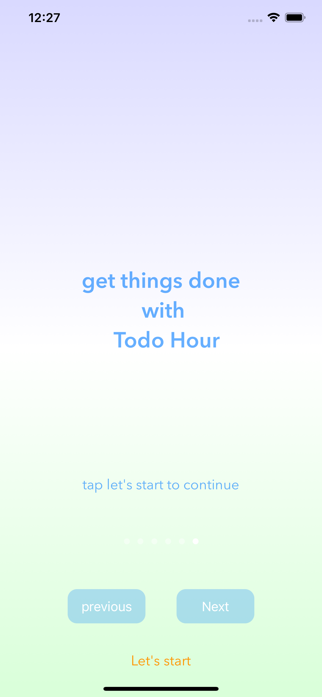
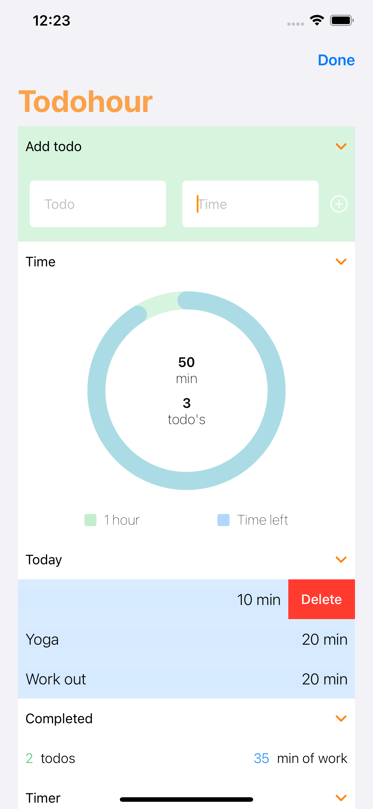

Todo Hour
Todo Hour is a productivity-focused mobile application designed to help users stay focused, manage their time effectively, and build better work habits. The app emphasizes simplicity and clarity to reduce distractions and improve task completion.



Focus & Time Management
The core idea behind Todo Hour is to encourage focused work sessions. Users can organize tasks and work through them in a structured way, helping reduce context switching and improve productivity.
Task Management
The app allows users to create, organize, and track tasks in a clean and intuitive interface. The design prioritizes ease of use, making it quick to add and manage tasks without unnecessary complexity.
User Experience
A strong focus was placed on minimal design and responsiveness. The goal was to create an experience that feels lightweight and distraction-free while still providing useful functionality.
Cross-Platform Development
Todo Hour was developed for both iOS and Android platforms, using Swift for iOS and Kotlin for Android. This allowed the product to reach a wider audience while maintaining platform-specific performance and design standards.
Timers & Focus Sessions
A key feature of Todo Hour is the use of time-based work sessions.
Users can focus on one task at a time using built-in timers, helping
structure their work and reduce distractions.
This approach encourages deeper focus and supports techniques such as
time blocking and Pomodoro-style workflows.
Notifications
The app includes notifications to keep users on track during their work sessions.
Users are alerted when a timer is completed, helping them stay aware of their
progress without constantly checking the app.
Notifications were designed to be minimal and non-intrusive, reinforcing focus
rather than interrupting it.
Tech Stack
- Swift (iOS)
- Kotlin (Android)
- Native mobile development